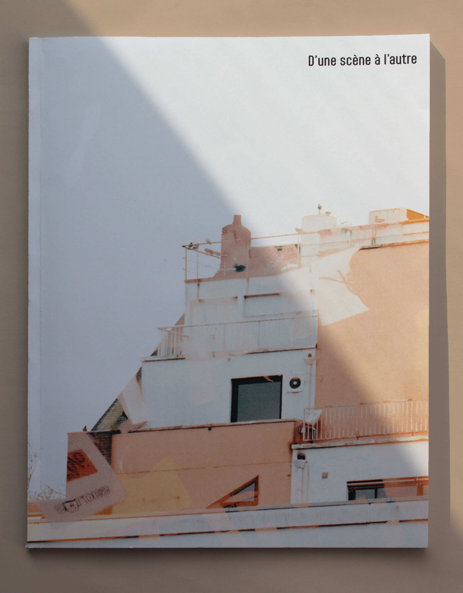
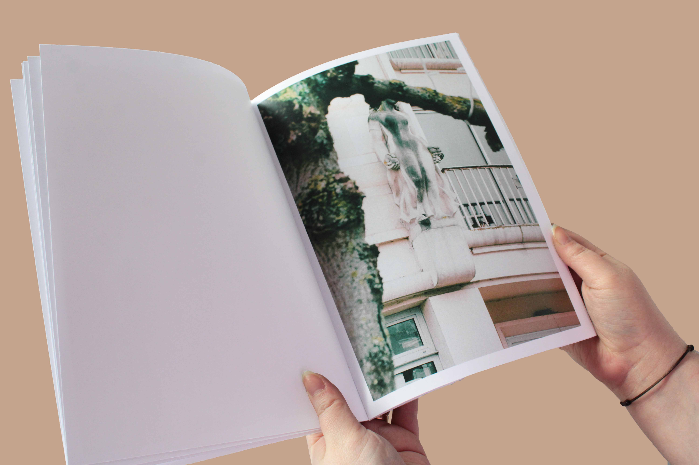
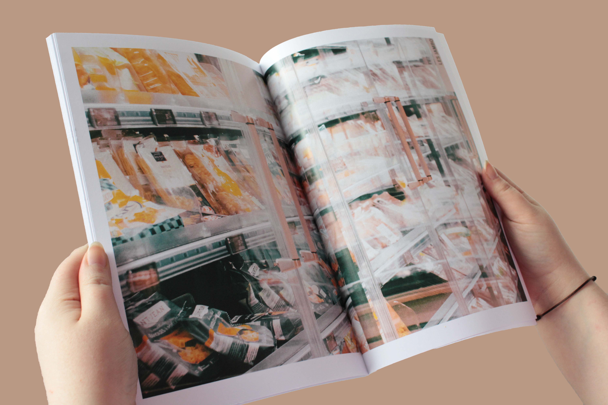
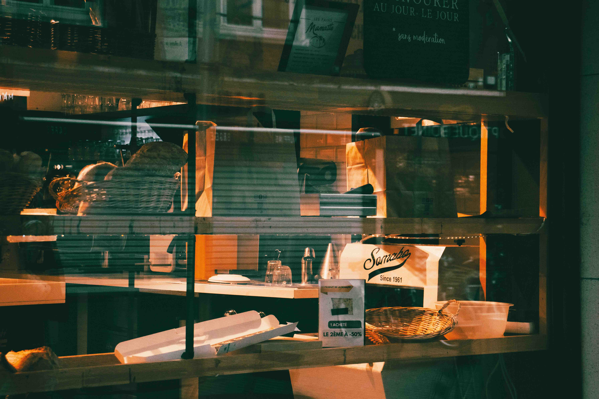
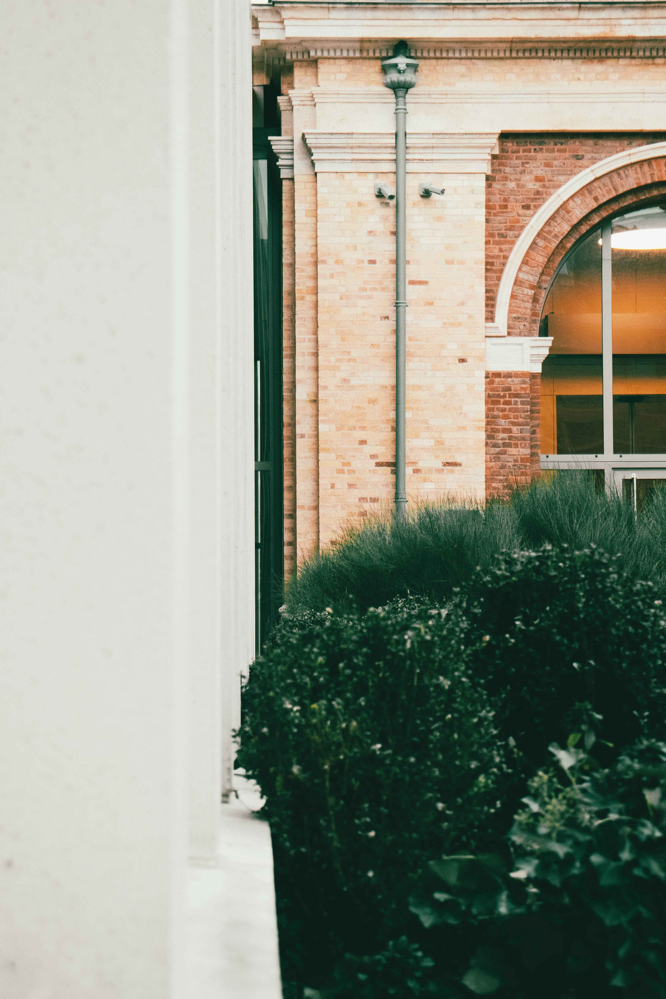
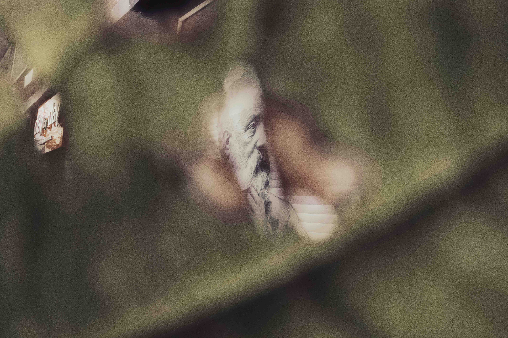

D’UNE SCÈNE À L’AUTRE
- 21 × 29,7 cm
- 2025
Édition de photographies qui étudie les limites du cadre photographique et les transitions qui les lient.















Édition de photographies qui étudie les limites du cadre photographique et les transitions qui les lient.





